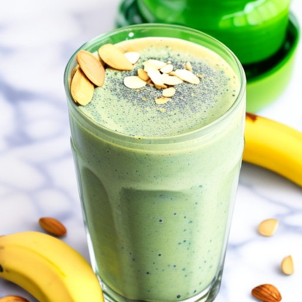

Thor's Smoothie

Description
A powerful blend of Greek yogurt, spinach, banana, almond butter, and a
splash of Valkyrie nectar. This invigorating smoothie would provide me
with a burst of strength and vigor.
Ingredients
- 1 ripe banana
- 1 cup fresh spinach leaves
- 2 tablespoons almond butter or peanut butter
- 1 cup Greek yogurt (plain or flavored, such as vanilla or honey)
- 1/2 cup almond milk or any milk of your choice
- 1 teaspoon honey or maple syrup (optional, for added sweetness)
- Ice cubes (optional, for a chilled smoothie)
Instructions
- Peel the ripe banana and break it into chunks.
- In a blender, combine the banana chunks, fresh spinach leaves, almond
butter or peanut butter, Greek yogurt, and almond milk.
- If desired, add honey or maple syrup for a touch of sweetness. This
step is optional, as the sweetness of the banana and flavored yogurt
may be sufficient for your taste.
- Blend all the ingredients together until smooth and creamy. If you prefer
a thicker consistency, you can add more yogurt or reduce the amount of milk.
If you prefer a thinner consistency, add a little more milk.
- If you'd like a chilled smoothie, add a handful of ice cubes to the blender
and blend again until the ice is crushed and well incorporated.
- Once the smoothie reaches your desired consistency, pour it into a glass.
- You can garnish the smoothie with a sprinkle of chia seeds, sliced almonds,
or a drizzle of honey for added texture and flavor.
- Thor's Thundering Smoothie is now ready to be enjoyed! Sip on this powerful
blend of banana, spinach, nut butter, and yogurt to feel energized and ready
to take on the day, just like the mighty Thor himself.
Back to home page